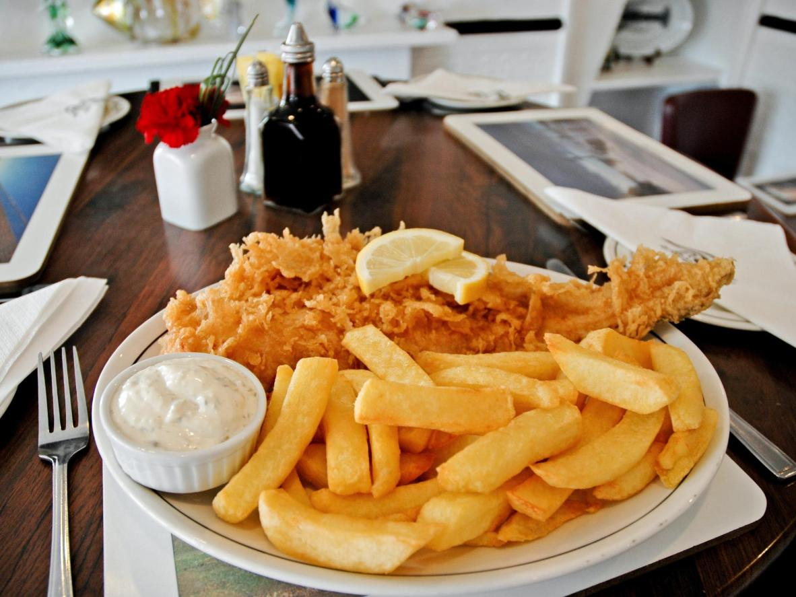
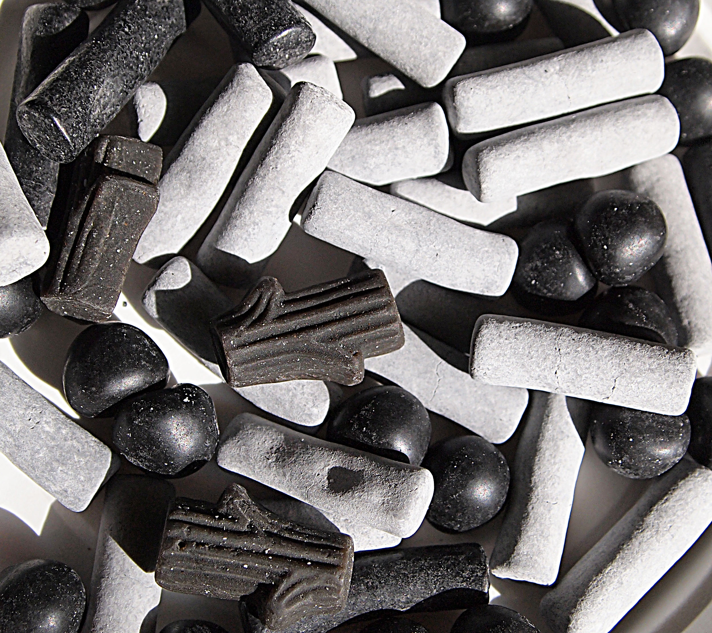
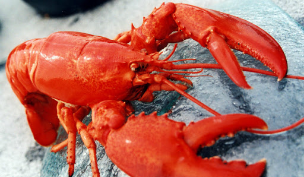
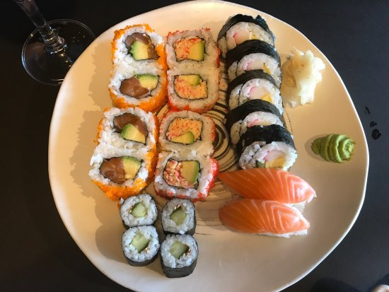
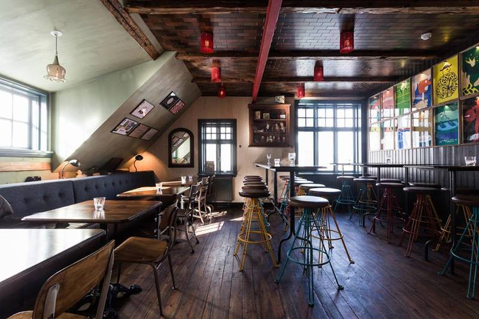

Исландская кухня
Обзор меню:
Стритфуд
Жители Рейкьявика обожают хот-доги. Возле киоска Bæjarins beztu pylsur (Tryggvatagata, 1) всегда огромные очереди. The Guardian назвал здешние сосиски в булке лучшими в Европе, а еще тут не погнушался пообедать сам Билл Клинтон.
В Icelandic Fish & Chips (Tryggvagata, 11) вас ждут огромные порции. Рыба здесь везде – она даже служит плафонами для светильников и входит в состав лимонада.
Из экзотики, которую нужно попробовать – соленая лакрица. Батончики с ней продаются на каждой заправке, но дешевле всего купить ее в одном из многочисленных супермаркетов Bonus.
Тут же стоит взять на пробу местный самый популярный завтрак: молочный продукт Skyr – то ли сыр, то ли йогурт.
Жители Рейкьявика обожают хот-доги. Возле киоска Bæjarins beztu pylsur (Tryggvatagata, 1) всегда огромные очереди. The Guardian назвал здешние сосиски в булке лучшими в Европе, а еще тут не погнушался пообедать сам Билл Клинтон.
В Icelandic Fish & Chips (Tryggvagata, 11) вас ждут огромные порции. Рыба здесь везде – она даже служит плафонами для светильников и входит в состав лимонада.
Из экзотики, которую нужно попробовать – соленая лакрица. Батончики с ней продаются на каждой заправке, но дешевле всего купить ее в одном из многочисленных супермаркетов Bonus.
Тут же стоит взять на пробу местный самый популярный завтрак: молочный продукт Skyr – то ли сыр, то ли йогурт.
Рестораны/кафе
Кухня Исландии не отличается особым разнообразием – рыба в рыбе под рыбным соусом. Самым изысканным деликатесом тут считается протухшее акулье мясо. Если к таким экспериментам вы еще не готовы, возьмите на заметку места с более традиционными блюдами.
Sægreifinn (Geirsgata, 8). Лучшего места для того, чтобы отведать суп из лобстера, не найти. К тому же цены тут на порядок ниже обычных.
Fiskmarkaðurinn (Aðalstræti, 12) – небольшой рыбный ресторанчик с блюдами японской кухни. Здесь подают вкусный сашими и десерты. Цены, правда, высокие. Лучше зарезервировать место заранее, иначе рискуете сюда не попасть.
Создателям Laundromat cafe (Austurstræti, 9) пришла в голову идея: в прачечных люди могут не только ждать, пока закончится стирка, но и провести время с пользой. Выпить пива, например, или пообедать.
Кухня Исландии не отличается особым разнообразием – рыба в рыбе под рыбным соусом. Самым изысканным деликатесом тут считается протухшее акулье мясо. Если к таким экспериментам вы еще не готовы, возьмите на заметку места с более традиционными блюдами.
Sægreifinn (Geirsgata, 8). Лучшего места для того, чтобы отведать суп из лобстера, не найти. К тому же цены тут на порядок ниже обычных.
Fiskmarkaðurinn (Aðalstræti, 12) – небольшой рыбный ресторанчик с блюдами японской кухни. Здесь подают вкусный сашими и десерты. Цены, правда, высокие. Лучше зарезервировать место заранее, иначе рискуете сюда не попасть.
Создателям Laundromat cafe (Austurstræti, 9) пришла в голову идея: в прачечных люди могут не только ждать, пока закончится стирка, но и провести время с пользой. Выпить пива, например, или пообедать.
Бары
Mikkeller&Friends (Hverfisgata, 12). Бар расположен в одном из самых старых домов столичного района 101. Раньше тут находился первый исландский госпиталь с рентген-оборудованием, потом приют для женщин.
The English Pub. Здесь не найдете каких-то чисто исландских фишек или изысканного меню, но дегустировать пиво местных сортов дешевле всего именно тут: бокал Gull будет стоить всего €4.
Microbar (Vesturgata, 2) не зря который год подряд занимает первое место в рейтингах лучших пабов Рейкьявика. Тут очень любят "зависать" местные жители, поэтому если хотите ощутить настоящий пульс ночной жизни города, вам сюда. Только здесь удастся попробовать абсолютно все сорта исландского пива, заказав специальные пробники по 170 мл.
В Gaukurinn (Tryggvagata, 22) вы сможете не только попробовать лучшие шоты, но и попасть на какой-нибудь ивент: например, караоке-пати или вечер стендап-комедии.
Mikkeller&Friends (Hverfisgata, 12). Бар расположен в одном из самых старых домов столичного района 101. Раньше тут находился первый исландский госпиталь с рентген-оборудованием, потом приют для женщин.
The English Pub. Здесь не найдете каких-то чисто исландских фишек или изысканного меню, но дегустировать пиво местных сортов дешевле всего именно тут: бокал Gull будет стоить всего €4.
Microbar (Vesturgata, 2) не зря который год подряд занимает первое место в рейтингах лучших пабов Рейкьявика. Тут очень любят "зависать" местные жители, поэтому если хотите ощутить настоящий пульс ночной жизни города, вам сюда. Только здесь удастся попробовать абсолютно все сорта исландского пива, заказав специальные пробники по 170 мл.
В Gaukurinn (Tryggvagata, 22) вы сможете не только попробовать лучшие шоты, но и попасть на какой-нибудь ивент: например, караоке-пати или вечер стендап-комедии.